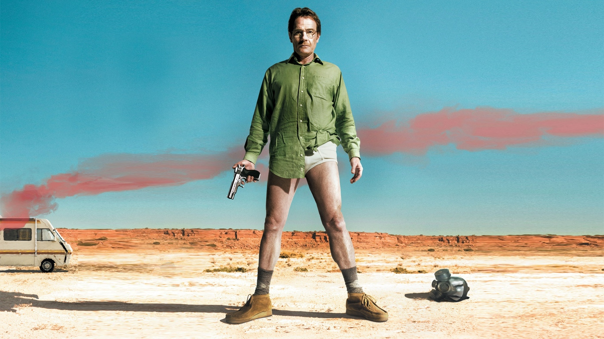

По американскому сериалу "Breaking Bad" и по его спин-оффу "Лучше звоните Солу"
«Во все тяжкие» (англ. Breaking Bad) — американская телевизионная криминальная драма, премьерные серии которой транслировались с 20 января 2008 года по 29 сентября 2013 года по кабельному каналу AMC. На протяжении пяти сезонов, состоящих из 62 эпизодов, показана история Уолтера Уайта, школьного учителя, у которого диагностировали неоперабельный рак лёгких. Вместе со своим бывшим учеником Джесси Пинкманом он начинает производить и продавать метамфетамин, чтобы обеспечить финансовое будущее своей семьи. Постановка и съёмка сериала велись в городе Альбукерке, штат Нью-Мексико.
Создатель и исполнительный продюсер сериала — Винс Гиллиган. Главные роли в сериале исполнили Брайан Крэнстон, сыгравший Уолтера Уайта, и Аарон Пол, ставший его сообщником Джесси Пинкманом. Анна Ганн стала Скайлер Уайт — женой Уолтера Уайта, Ар-Джей Митт — его сыном. Бетси Брандт исполнила роль сестры Скайлер — Мари Шрейдер, а её мужа Хэнка Шрейдера сыграл Дин Норрис. Начиная со второго сезона, Уолтер нанял адвоката Сола Гудмана, в роли которого выступил Боб Оденкерк. Он в свою очередь познакомил Уолта с частным сыщиком Майком Эрмантраутом, сыгранным Джонатаном Бэнксом. Временным работодателем Уолта в сфере наркоторговли стал Густаво Фринг, в исполнении Джанкарло Эспозито. В заключительном сезоне сериала появились Джесси Племонс в роли Тода Алкиста, временного сообщника Уолтера Уайта, и Лора Фрейзер в роли Лидии Родарт-Куэйл, новой компаньонки Уолта.
«Во все тяжкие» завоевал широкое признание критиков, получил высокие оценки и был признан одним из лучших американских телесериалов. Сериал был удостоен множества наград, среди которых 16 прайм-таймовых премий «Эмми», два «Золотых глобуса», пять премий Гильдии киноактёров США, шесть премий Гильдии сценаристов США, две премии Гильдии режиссёров Америки, две премии Гильдии продюсеров США, две премии Пибоди, восемь премий «Спутник», одна BAFTA, пять премий Ассоциации телевизионных критиков и шесть премий «Выбор телевизионных критиков». За исполнение главной роли Брайан Крэнстон получил четыре премии «Эмми» за лучшую мужскую роль в драматическом телесериале. Аарон Пол был трижды награждён премией «Эмми» за лучшую мужскую роль второго плана. Анна Ганн была дважды отмечена премией «Эмми» за лучшую женскую роль второго плана.

Учитель химии с дипломом Калтеха, который узнает, что у него неоперабельный рак легких, и начинает со своим бывшим учеником варить и продавать мет, отстраивая собственную криминальную империю.
Подробнее
Бывший ученик Уолтера Уайта, наркоман, наркодиллер, партнёр Уолта, весьма способный лаборант без научных знаний и дипломов. Основные черты характера: лояльность, гуманизм, любовь к детям.
Подробнее
Предприниматель и наркобарон, за 20 лет выстроил две империи: по сбыту наркотиков на юге США и сеть ресторанов быстрого питания «Los Pollos Hermanos». Дружит с главой УБН и является спонсором благотворительного забега. Хорошо готовит. Ведёт личную вендетту с мексиканским наркокартелем. Появляется в сериале «Лучше звоните Солу».
Подробнее
Бывший полицейский, начальник безопасности «Los Pollos Hermanos», доверенное лицо Гуса Фринга — киллер и чистильщик. Обладает лицензией частного детектива. Один из главных героев сериала «Лучше звоните Солу».
Подробнее
Адвокат и продойха, защищает преступников, всегда знает, как обойти законы. Работает в доле с Уолтером Уайтом и Джесси Пикнманом. Оптимист. Обладает даром убеждения и нюхом на прибыль. Чует, когда пора сматывать удочки. Его трудно выбить из колеи или обмануть. Центральный персонаж сериала «Лучше звоните Солу».
Подробнее
Специальный агент УБН (Управления по борьбе с наркотиками), а также свояк Уолтера: женат на сестре Скайлер Мари. Сочетает в себе грубые манеры и высокий профессионализм, а иногда выказывает хорошее знание человеческой психологии в делах, касающихся профессии и семьи. Появляется в сериале «Лучше звоните Солу».
Подробнее